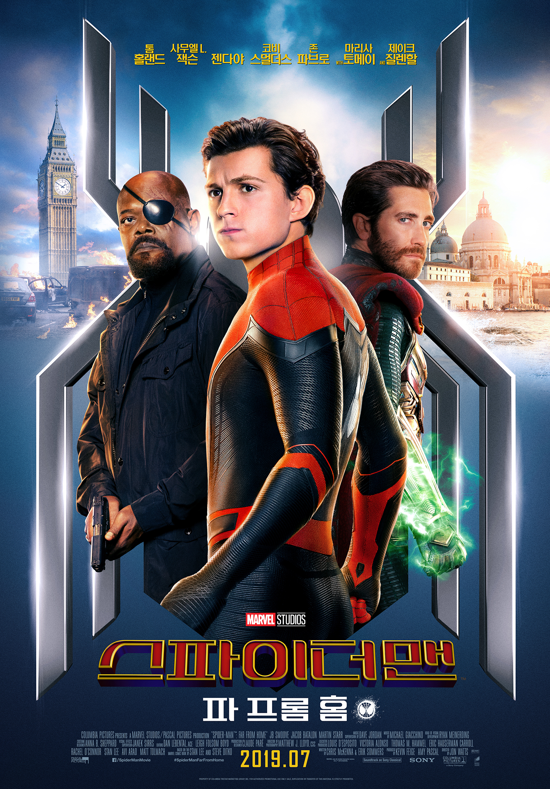
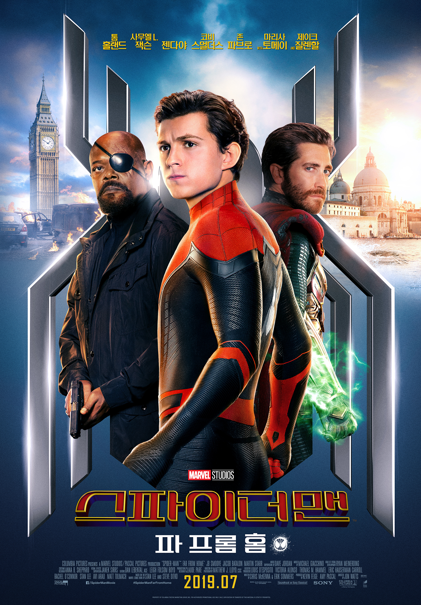

- 반지의제왕
- 영화의 감독 : 피터잭슨
- 평점
관람객 9.84 / 네티즌 9.31
- 줄거리
21세기 가장 위대한 판타지 걸작의 귀환!
모든 힘을 지배할 악의 군주 ‘사우론’의 절대반지가 깨어나고
악의 세력이 세상을 지배해가며 중간계는 대혼란에 처한다.
호빗 ‘프로도’와 그의 친구들, 엘프 ‘레골라스’, 인간 전사 ‘아라곤’과 ‘보로미르’
드워프 ‘김리’ 그리고 마법사 ‘간달프’로 구성된 반지원정대는
평화를 지키기 위해 절대반지를 파괴할 유일한 방법인
반지가 만들어진 모르도르를 향해 목숨을 건 여정을 떠난다.
한편, 점점 세력을 넓혀온 사우론과의 피할 수 없는 전쟁을 앞둔
반지원정대는 드디어 거대한 최후의 전쟁을 시작하는데...
- 영화 포스터

- 쇼생크탈출
- 영화의 감독 : 프랭크 다라본트
- 평점
관람객 9.88 / 네티즌 9.46
- 줄거리
두려움은 너를 죄수로 가두고 희망은 너를 자유롭게 하리라
촉망 받던 은행 부지점장 ‘앤디(팀 로빈슨 分)’는 아내와 그 애인을 살해한 혐의로 종신형을 받고 쇼생크 교도소에 수감된다.
강력범들이 수감된 이곳에서 재소자들은 짐승 취급 당하고, 혹여 간수 눈에 잘못 보였다가는 개죽음 당하기 십상이다.
처음엔 적응 못하던 ‘앤디’는 교도소 내 모든 물건을 구해주는 ‘레드(모건 프리먼 分)’와 친해지며 교도소 생활에 적응하려 하지만, 악질 재소자에게 걸려 강간까지 당한다.
그러던 어느 날, 간수장의 세금 면제를 도와주며 간수들의 비공식 회계사로 일하게 되고, 마침내는 소장의 검은 돈까지 관리해주게 된다.
덕분에 교도소 내 도서관을 열 수 있게 되었을 무렵, 신참내기 ‘토미(길 벨로우스 分)’로부터 ‘앤디’의 무죄를 입증할 기회를 얻지만, 노튼 소장은 ‘앤디’를 독방에 가두고
‘토미’를 무참히 죽여버리는데...
- 영화 포스터
- 해리포터
- 영화의 감독 : 크리스 콜럼버스
- 평점
관람객 9.39 / 네티즌 9.37
- 줄거리
해리 포터(다니엘 래드클리프 분)는 위압적인 버논 숙부(리챠드 그리피스 분)와 냉담한 이모 페투니아 (피오나 쇼 분), 욕심 많고 버릇없는 사촌 더즐리(해리 멜링 분) 밑에서 갖은
구박을 견디며 계단 밑 벽장에서 생활한다. 이모네 식구들 역시 해리와의 동거가 불편하기는 마찬가지. 이모 페투니아에겐 해리가 이상한(?) 언니 부부에 관한 기억을 떠올리게 만드는
달갑지 않은 존재다. 11살 생일이 며칠 앞으로 다가왔지만 한번도 생일파티를 치르거나 제대로 된 생일선물을 받아 본 적이 없는 해리로서는 특별히 신날 것도 기대 할 것도 없다.
11살 생일을 며칠 앞둔 어느 날 해리에게 초록색 잉크로 쓰여진 한 통의 편지가 배달된다. 그 편지의 내용은 다름 아닌 해리의 11살 생일을 맞이하여 전설적인“호그와트
마법학교”에서 보낸 입학초대장이었다. 그리고 해리의 생일을 축하하러 온 거인 해그리드는 해리가 모르고 있었던 해리의 진정한 정체를 알려주는데. 그것은 바로 해리가 굉장한 능력을
지닌 마법사라는 것!
해리는 해그리드의 지시대로 자신을 구박하던 이모네 집을 주저없이 떠나 호그와트행을 택한다. 런던의 킹스크로스 역에 있는 비밀의 9와 3/4 승장장에서 호그와트 특급열차를 탄 해리는
열차 안에서 같은 호그와트 마법학교 입학생인 헤르미온느 그레인저(엠마 왓슨 분)와 론 위즐리 (루퍼트 그린트 분)를 만나 친구가 된다. 이들과 함께 호그와트에 입학한 해리는,
놀라운 모험의 세계를 경험하며 갖가지 신기한 마법들을 배워 나간다. 또한 빗자루를 타고 공중을 날아다니며 경기하는 스릴 만점의 퀴디치 게임에서 스타로 탄생하게 되며, 용, 머리가
셋 달린 개, 유니콘, 켄타우루스, 히포그리프(말 몸에 독수리 머리와 날개를 가진 괴물)등 신비한 동물들과 마주치며 모험을 즐긴다. 그러던 어느 날 해리는 호그와트 지하실에
`영원한 생을 가져다주는 마법사의 돌'이 비밀리에 보관되어 있다는 것을 알게되고, 해리의 부모님을 죽인 볼드모트가 그 돌을 노린다는 사실도 알게 된다. 볼드모트는 바로 해리를
죽이려다 실패하고 이마에 번개모양의 흉터를 남긴 장본인이다. 해리는 볼드모트로부터 마법의 돌과 호그와트 마법학교를 지키기 위해 필사의 노력을 하는데...
- 영화 포스터

- 스파이더맨
- 영화의 감독 : 존 왓츠
- 평점
관람객 8.99 / 네티즌 8.33
- 줄거리
모든 것이 다시 시작된다!
‘엔드게임’ 이후 변화된 세상,
스파이더맨 ‘피터 파커’는 학교 친구들과 유럽 여행을 떠나게 된다.
그런 그의 앞에 ‘닉 퓨리’가 등장해 도움을 요청하고
정체불명의 조력자 ‘미스테리오’까지 합류하게 되면서
전 세계를 위협하는 새로운 빌런 ‘엘리멘탈 크리쳐스’와
맞서야만 하는 상황에 놓이게 되는데…
- 영화 포스터

- 영화의 감독 : 피터잭슨
- 평점 관람객 9.84 / 네티즌 9.31
- 줄거리 21세기 가장 위대한 판타지 걸작의 귀환! 모든 힘을 지배할 악의 군주 ‘사우론’의 절대반지가 깨어나고 악의 세력이 세상을 지배해가며 중간계는 대혼란에 처한다. 호빗 ‘프로도’와 그의 친구들, 엘프 ‘레골라스’, 인간 전사 ‘아라곤’과 ‘보로미르’ 드워프 ‘김리’ 그리고 마법사 ‘간달프’로 구성된 반지원정대는 평화를 지키기 위해 절대반지를 파괴할 유일한 방법인 반지가 만들어진 모르도르를 향해 목숨을 건 여정을 떠난다. 한편, 점점 세력을 넓혀온 사우론과의 피할 수 없는 전쟁을 앞둔 반지원정대는 드디어 거대한 최후의 전쟁을 시작하는데...
- 영화 포스터
- 영화의 감독 : 프랭크 다라본트
- 평점 관람객 9.88 / 네티즌 9.46
- 줄거리 두려움은 너를 죄수로 가두고 희망은 너를 자유롭게 하리라 촉망 받던 은행 부지점장 ‘앤디(팀 로빈슨 分)’는 아내와 그 애인을 살해한 혐의로 종신형을 받고 쇼생크 교도소에 수감된다. 강력범들이 수감된 이곳에서 재소자들은 짐승 취급 당하고, 혹여 간수 눈에 잘못 보였다가는 개죽음 당하기 십상이다. 처음엔 적응 못하던 ‘앤디’는 교도소 내 모든 물건을 구해주는 ‘레드(모건 프리먼 分)’와 친해지며 교도소 생활에 적응하려 하지만, 악질 재소자에게 걸려 강간까지 당한다. 그러던 어느 날, 간수장의 세금 면제를 도와주며 간수들의 비공식 회계사로 일하게 되고, 마침내는 소장의 검은 돈까지 관리해주게 된다. 덕분에 교도소 내 도서관을 열 수 있게 되었을 무렵, 신참내기 ‘토미(길 벨로우스 分)’로부터 ‘앤디’의 무죄를 입증할 기회를 얻지만, 노튼 소장은 ‘앤디’를 독방에 가두고 ‘토미’를 무참히 죽여버리는데...
- 영화 포스터
- 영화의 감독 : 크리스 콜럼버스
- 평점 관람객 9.39 / 네티즌 9.37
- 줄거리 해리 포터(다니엘 래드클리프 분)는 위압적인 버논 숙부(리챠드 그리피스 분)와 냉담한 이모 페투니아 (피오나 쇼 분), 욕심 많고 버릇없는 사촌 더즐리(해리 멜링 분) 밑에서 갖은 구박을 견디며 계단 밑 벽장에서 생활한다. 이모네 식구들 역시 해리와의 동거가 불편하기는 마찬가지. 이모 페투니아에겐 해리가 이상한(?) 언니 부부에 관한 기억을 떠올리게 만드는 달갑지 않은 존재다. 11살 생일이 며칠 앞으로 다가왔지만 한번도 생일파티를 치르거나 제대로 된 생일선물을 받아 본 적이 없는 해리로서는 특별히 신날 것도 기대 할 것도 없다. 11살 생일을 며칠 앞둔 어느 날 해리에게 초록색 잉크로 쓰여진 한 통의 편지가 배달된다. 그 편지의 내용은 다름 아닌 해리의 11살 생일을 맞이하여 전설적인“호그와트 마법학교”에서 보낸 입학초대장이었다. 그리고 해리의 생일을 축하하러 온 거인 해그리드는 해리가 모르고 있었던 해리의 진정한 정체를 알려주는데. 그것은 바로 해리가 굉장한 능력을 지닌 마법사라는 것! 해리는 해그리드의 지시대로 자신을 구박하던 이모네 집을 주저없이 떠나 호그와트행을 택한다. 런던의 킹스크로스 역에 있는 비밀의 9와 3/4 승장장에서 호그와트 특급열차를 탄 해리는 열차 안에서 같은 호그와트 마법학교 입학생인 헤르미온느 그레인저(엠마 왓슨 분)와 론 위즐리 (루퍼트 그린트 분)를 만나 친구가 된다. 이들과 함께 호그와트에 입학한 해리는, 놀라운 모험의 세계를 경험하며 갖가지 신기한 마법들을 배워 나간다. 또한 빗자루를 타고 공중을 날아다니며 경기하는 스릴 만점의 퀴디치 게임에서 스타로 탄생하게 되며, 용, 머리가 셋 달린 개, 유니콘, 켄타우루스, 히포그리프(말 몸에 독수리 머리와 날개를 가진 괴물)등 신비한 동물들과 마주치며 모험을 즐긴다. 그러던 어느 날 해리는 호그와트 지하실에 `영원한 생을 가져다주는 마법사의 돌'이 비밀리에 보관되어 있다는 것을 알게되고, 해리의 부모님을 죽인 볼드모트가 그 돌을 노린다는 사실도 알게 된다. 볼드모트는 바로 해리를 죽이려다 실패하고 이마에 번개모양의 흉터를 남긴 장본인이다. 해리는 볼드모트로부터 마법의 돌과 호그와트 마법학교를 지키기 위해 필사의 노력을 하는데...
- 영화 포스터
- 영화의 감독 : 존 왓츠
- 평점 관람객 8.99 / 네티즌 8.33
- 줄거리 모든 것이 다시 시작된다! ‘엔드게임’ 이후 변화된 세상, 스파이더맨 ‘피터 파커’는 학교 친구들과 유럽 여행을 떠나게 된다. 그런 그의 앞에 ‘닉 퓨리’가 등장해 도움을 요청하고 정체불명의 조력자 ‘미스테리오’까지 합류하게 되면서 전 세계를 위협하는 새로운 빌런 ‘엘리멘탈 크리쳐스’와 맞서야만 하는 상황에 놓이게 되는데…
- 영화 포스터 